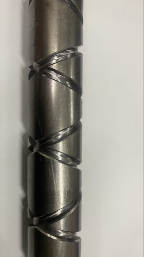
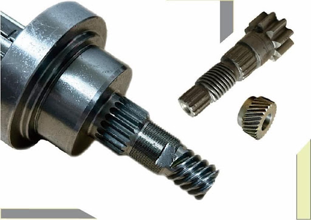
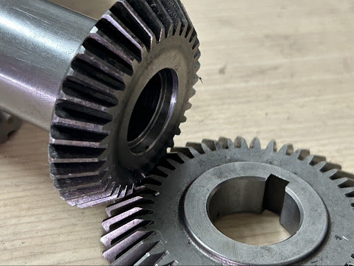

PRODUCT CATALOG
加工成品展覽目錄
點擊分類按鈕進行快速篩選，或輸入關鍵字搜尋樣品
梯形/愛克姆螺帽
Cross-Helix Double Helical Lead Screws
適用於排線機構、紡織機與自動化設備，具備精準導程與倒角加工。
外徑: 60mm內
牙長: 800mm內

來回牙螺桿精密十字牙 / 來回牙螺桿
Cross-Helix Double Helical Lead Screws
適用於排線機構、紡織機與自動化設備，具備精準導程與倒角加工。
外徑: 60mm內
牙長: 800mm內

蝸桿蝸輪高減速比 蝸桿與蝸輪組
Precision Worm Gear Sets
低噪音、平穩運轉，適用於各種減速傳動機構與重型機械運轉需求。
模數: M0.5 ~ M4
長度: 500mm內

傘齒輪直齒/轉角傳動 傘齒輪
Bevel Gears
專用於直角傳動機構，咬合精準度高，耐磨耗，符合動力傳遞需求。
模數: M0.5 ~ M4
最大外徑: 220mm
.jpg) 正/斜齒輪
正/斜齒輪
精密正齒輪與斜齒輪
Spur & Helical Gears
細緻模數加工，傳動順暢，適用於精密儀器、機械傳動箱。
模數: M0.3 ~ M1.5
外徑: 110mm內
修理急件照片區
舊件測繪 / 斷齒損壞修理急件
Custom Part Repair & Emergency Work
工廠停機急救！提供現場樣品複製、舊件測繪加工與快速替換件製作。
急件插單處理
歡迎親洽 / 電話聯繫